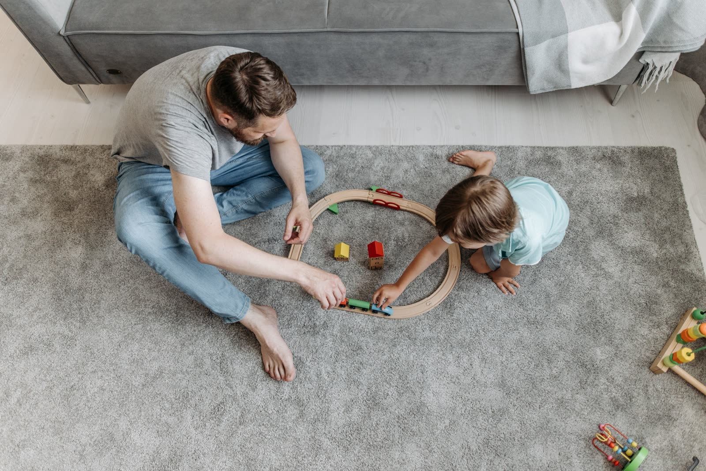

Conoce Conexión
Conexión es un centro integral psicológico para niños de 3 a 11 años con TEA. Su propósito es combinar terapias especializadas con orientación práctica para quienes los cuidan, reconociendo que el bienestar del cuidador también forma parte del acompañamiento.

Lo que nos guía
Los valores que sostienen cada espacio de acompañamiento en Conexión.
👂
Escucha y respeto
Cada familia es escuchada desde sus propias necesidades y ritmos.
🎯
Acompañamiento individualizado
Las terapias se adaptan a las particularidades de cada niño.
👨👩👧
Participación del cuidador
El cuidador es parte activa del proceso, no un espectador externo.
🌿
Bienestar emocional
El cuidado de quien cuida también es parte del acompañamiento.
🏠
Orientación práctica para el hogar
Recomendaciones sencillas para continuar lo trabajado en casa.